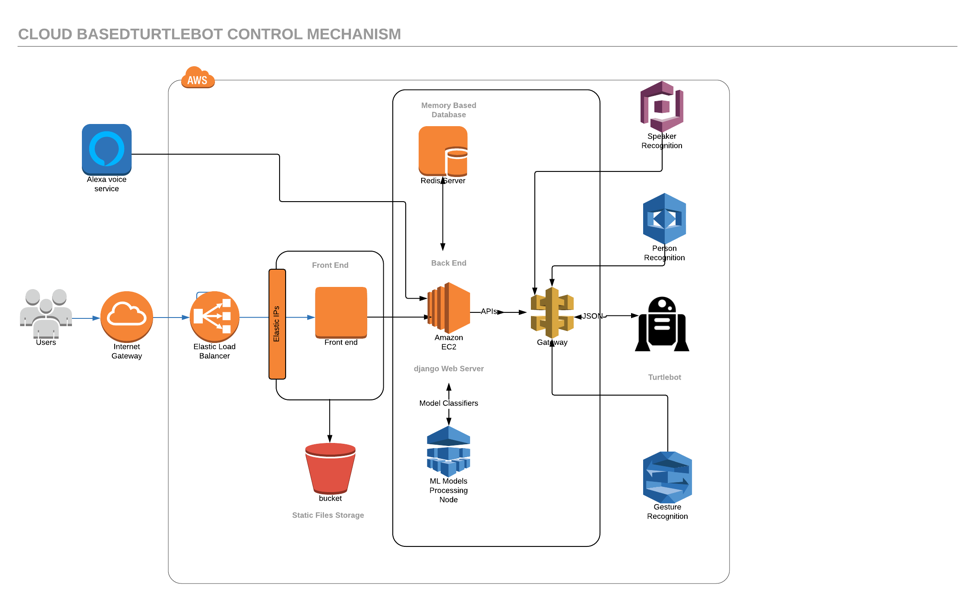
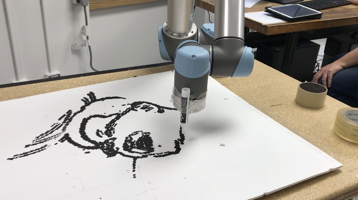
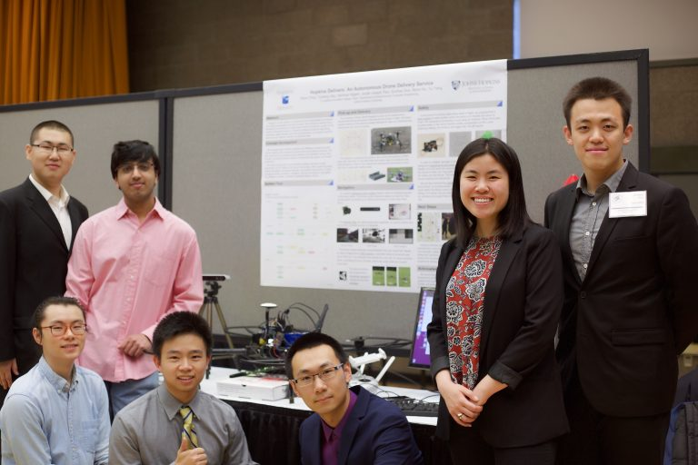

AlexaBot

AlexaBot is the collaboration system between Amazon Alexa and Turtlebot. It implemented various input sources and sensors such as input via voice from an Amazon Alexa device or input using hand gestures, eye movement or even a web based remote control. AWS is implemented as Internet based command mechanism for scalability and reliability.
Demo Video can be found here. Users from Mainland of China can find video from here. Control webpage can be found here.
Drawing Prof. Kim's Face with UR5

UR5 is controlled by computing joint variables via inverse kinematic method. Prof Kim's picture is processed by color gradient algorithm and croped by hard-coding.
Demo Video can be found here. Users from Mainland of China can find video from here.
Hopkins Delivery

The goal of the project is to demonstrate the concept of drone delivery system throughout the JHU Homewood campus. The delivery system is built upon DJI Matrice 100, ZED stereo camera, NVIDIA Jetson TX2 and Arduino. This is a Leading Innovation Team Project. Drone autonomous system combine obstacle avoidance algorithms, proprietary safety features, and pick-up mechanisms. The system is built for ease-of-use for delivery vendors and students alike
Demo Video can be found here. Project poster can be found here.
DJI ROBOMASTER AI Challenge
The International Conference on Robotics and Automation (ICRA) is the IEEE Robotics and Automation Society’s flagship conference and is a premier international forum for robotics researchers to present their work.The ICRA 2018 DJI RoboMaster AI Challenge is jointly organized by the IEEE International Conference on Robotics and Automation, and the DJI RoboMaster Organizing Committee.
We made to final list representing Johns Hopkins University.
ICRA Paper can be found here. Project poster can be found here.